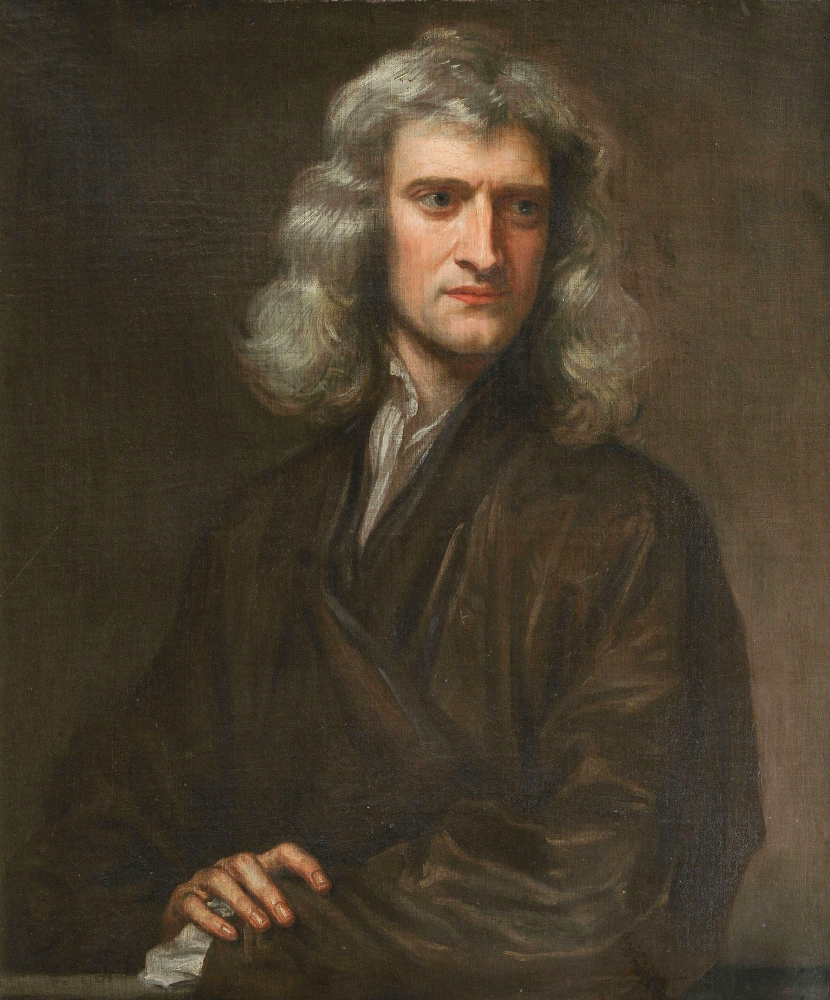
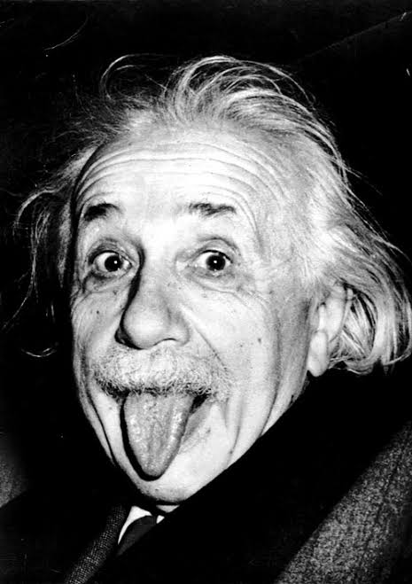
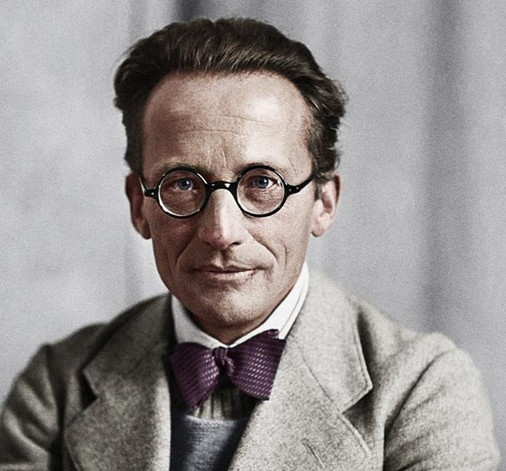

Passe o mouse sobre cada caixa para ver o efeito de :hover.

Matemático e físico inglês reconhecido como um dos cientistas mais influentes de todos os tempos e uma figura chave na Revolução Científica.
Ele formulou as leis do movimento e da gravitação universal, que dominaram a visão dos cientistas sobre o universo físico pelos três séculos seguintes.

Físico teórico alemão, desenvolveu a teoria da relatividade, um dos dois pilares da física moderna (ao lado da mecânica quântica).
Embora mais conhecido por sua equação de equivalência massa-energia (E = mc²), ele recebeu o Prêmio Nobel de Física em 1921 por sua descoberta da lei do efeito fotoelétrico.

Físico teórico austríaco, alcançou a fama mundial por suas contribuições para a mecânica quântica, especialmente a equação de Schrödinger, pela qual recebeu o Prêmio Nobel em 1933.
Ele também é muito conhecido pelo famoso experimento mental "O Gato de Schrödinger", criado para ilustrar o paradoxo da superposição quântica.